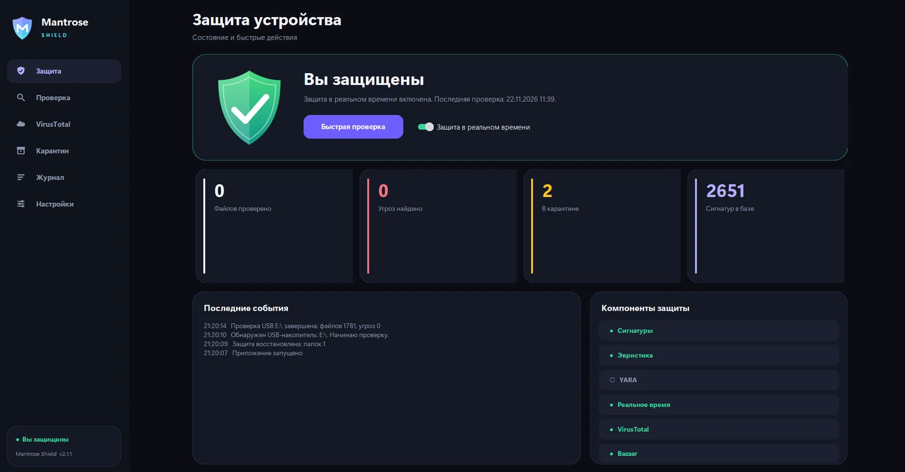
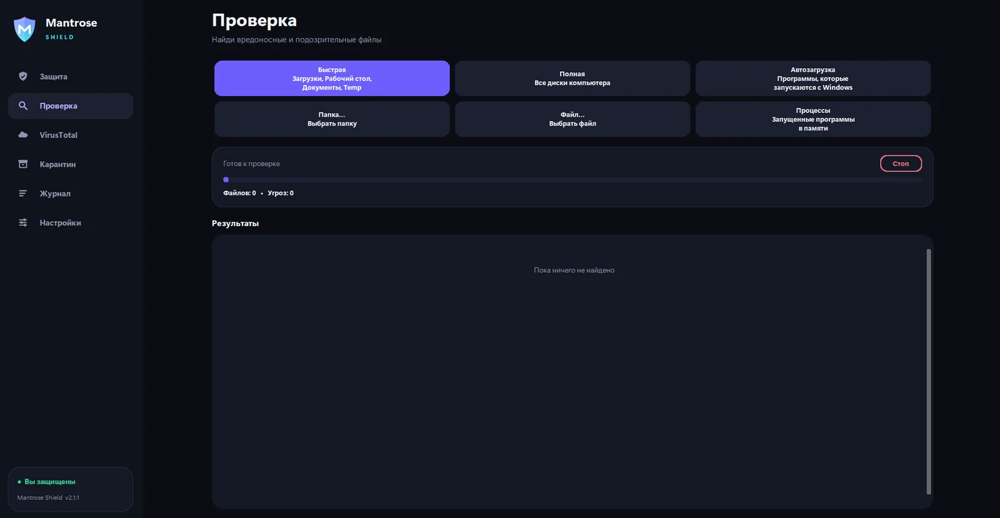
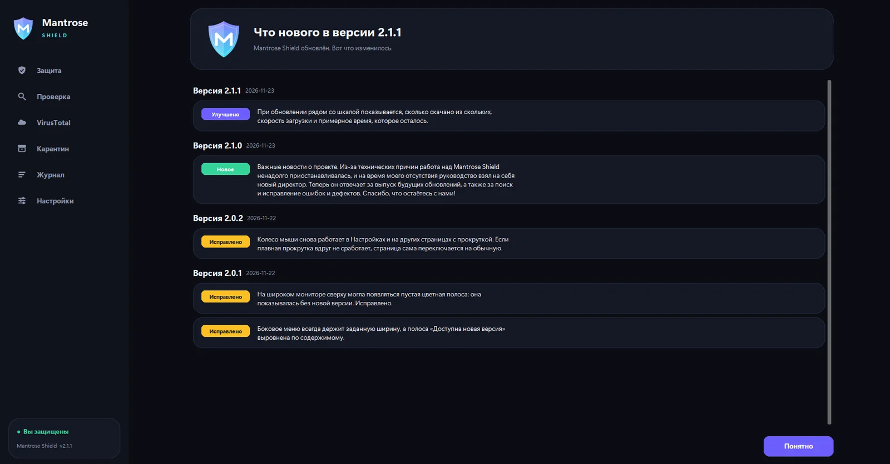

Антивирус, который следит за файлами, пока вы работаете
Mantrose Shield проверяет новые файлы в реальном времени, сверяет их с базами хешей и правилами YARA и изолирует угрозы в карантине. Всё управление на одном понятном экране.

Как выглядит программа
Три экрана, с которыми вы будете работать чаще всего. Нажмите на картинку, чтобы открыть её крупно.
Главный экран: вся защита за один взгляд
Крупный щит меняет цвет: зелёный, когда всё в порядке, жёлтый или красный, если нужно ваше внимание. Под ним четыре счётчика и лента событий, а справа список компонентов защиты.
- Быстрая проверка одной кнопкой
- Переключатель защиты в реальном времени
- Счётчики: проверено файлов, найдено угроз, в карантине, сигнатур в базе
- Подключённый USB-накопитель проверяется сам
Проверка: шесть режимов под любую задачу
Выберите, что проверять, и нажмите на карточку. Во время проверки видно, сколько файлов уже просмотрено и сколько угроз найдено, а остановить её можно кнопкой «Стоп».
- Быстрая: Загрузки, Рабочий стол, Документы и Temp
- Полная: все диски компьютера
- Автозагрузка: программы, которые запускаются с Windows
- Папка или отдельный файл на ваш выбор
- Процессы: запущенные программы в памяти

Обновления без хлопот
Когда выходит новая версия, вверху окна появляется кнопка «Обновить». Рядом со шкалой видно, сколько уже скачано, с какой скоростью и сколько осталось. После обновления программа показывает, что изменилось.
- Перед установкой проверяется контрольная сумма SHA-256
- Ваши настройки при обновлении сохраняются
- Окно «Что нового» с понятным списком изменений

Что внутри
Несколько уровней защиты работают вместе: если один что-то пропустит, другой может заметить.
- Защита в реальном времени
- Следит за выбранными папками вместе с вложенными и реагирует, как только в них появляется файл.
- Хеши и правила YARA
- Файлы сравниваются с базой сигнатур и правилами YARA. Базы можно обновить в один клик.
- Эвристика
- Находит файлы, которые маскируются под документы, и подозрительные скрипты, даже если их ещё нет в базах.
- Карантин
- Опасные файлы изолируются, а не удаляются сразу. Их можно просмотреть и при необходимости восстановить.
- VirusTotal
- Подозрительный файл можно проверить в облаке. Нужен только ваш бесплатный API-ключ.
- MalwareBazaar
- База известных образцов вредоносных программ подключается как ещё один источник сигнатур.
- Работа в фоне
- Программа живёт в трее и не мешает: окно можно закрыть, а защита продолжит работать.
- Темы и языки
- Шесть цветовых тем и интерфейс на русском или английском. Переключается в Настройках.
Как установить
Мастер установки сам обо всём спросит. Если программа уже стоит, он обновит её и сохранит ваши настройки.
- Скачайте установщикНажмите «Скачать для Windows». Файл называется MantroseShield_Setup.exe.
- Запустите егоОткройте файл и следуйте подсказкам мастера установки.
- Проверьте защитуОткройте программу: на главном экране должно быть написано «Вы защищены».
Проверьте скачанный файл
Сравните SHA-256 вашего файла с этой суммой. Если они совпадают, файл не повреждён и не подменён. В PowerShell её показывает команда Get-FileHash MantroseShield_Setup.exe.
86e99e5e6087689b663090d507999c35d0c2e40f2b249f496eda1f2e513f0ffb
Частые вопросы
Windows показывает предупреждение SmartScreen. Что делать?
Так бывает с новыми программами, которые ещё мало кто скачивал. Сверьте контрольную сумму выше, затем нажмите «Подробнее» и «Выполнить в любом случае».
Нужен ли интернет для работы?
Для проверки по локальным базам и правилам интернет не нужен. Он нужен для обновления баз, поиска новых версий и проверки через VirusTotal.
Что будет с найденной угрозой?
Файл попадёт в карантин, а не пропадёт навсегда. Во вкладке «Карантин» его можно посмотреть и восстановить, если это была ложная тревога.
Как обновить программу?
Когда выходит новая версия, вверху окна появляется кнопка «Обновить». Остальное программа сделает сама и перезапустится.
Как удалить Mantrose Shield?
Через «Параметры Windows», раздел «Приложения». Программа есть в списке установленных.
Защитите свой компьютер за минуту
Установщик для Windows, бесплатно.
Скачать Mantrose Shield 39,2 МБ